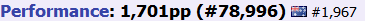

follow me in these places. watch me be bad at osu!
I browse memes, play osu! (and sometimes other games too!) and make webpages.
aww :<
yay <:
"So what's that, 12-15 counts of self defense with an automatic weapon? I'm losing count and I don't think the cops are gonna buy that anymore."
— Gordon Freeman, Freeman's Mind Episode 13